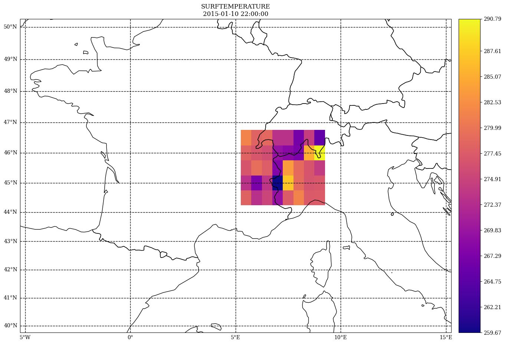

Interpolate (resample) on a lon/lat regular grid¶
!!! FIXME: resampling to/from Gauss grids is currently broken
[1]:
%matplotlib inline
# for figures in notebook
# import & initialize epygram
import epygram
epygram.init_env()
import os
INPUTS_DIR = os.path.join('..', 'inputs')
[2]:
gauss = epygram.formats.resource(os.path.join(INPUTS_DIR, 'analysis.full-arpege.tl149-c24.fa'), 'r')
lam = epygram.formats.resource(os.path.join(INPUTS_DIR, 'ICMSHAROM+0022'), 'r')
[3]:
fg = gauss.readfield('SURFTEMPERATURE')
[4]:
#fgl = fg.resample_on_regularll(dict(lonmin=-10, lonmax=15, latmin=35, latmax=55),
# resolution_in_degrees=0.2,
# reduce_data=False)
[5]:
#fgl.geometry
[6]:
#fig, ax = fgl.cartoplot()
[7]:
fl = lam.readfield('SURFTEMPERATURE')
[8]:
flr = fl.resample_on_regularll(dict(lonmin=-5, lonmax=15, latmin=40, latmax=50),
resolution_in_degrees=0.5,
reduce_data=False,
subzone='CI')
# [2024/01/11-18:35:38][numexpr.utils][_init_num_threads:0147][INFO]: Note: NumExpr detected 16 cores but "NUMEXPR_MAX_THREADS" not set, so enforcing safe limit of 8.
[9]:
fig, ax = flr.cartoplot()
/usr/lib/python3/dist-packages/matplotlib/colors.py:621: RuntimeWarning: overflow encountered in multiply
xa *= self.N

[ ]: